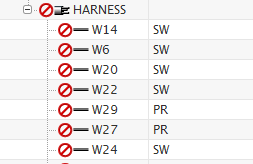
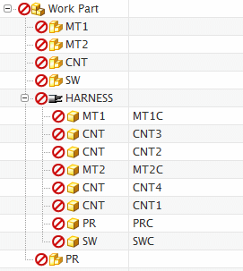

Review the connection data
-
Open the Electrical Connection Navigator
 , and expand the HARNESS node.
, and expand the HARNESS node.

Individual conductor data appears in the navigator. To sort the data inside the navigator, click any one of the column headers.
Note that in the right most column, the length of the unrouted conductors is currently zero.
-
Back in the Electrical Component Navigator, expand the HARNESS node.
The
 symbols at the beginning of the rows indicate that these component IDs have not yet been assigned to connectors in the wiring harness.
symbols at the beginning of the rows indicate that these component IDs have not yet been assigned to connectors in the wiring harness.
